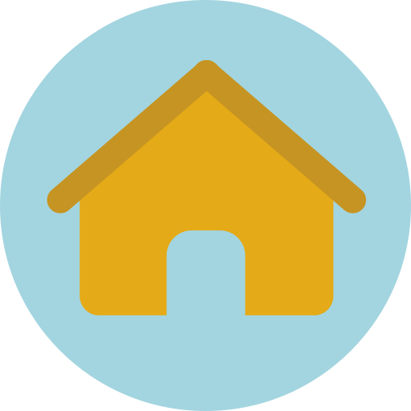
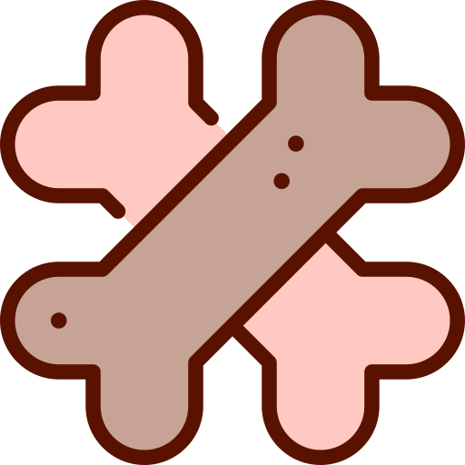

editor svg
 
EX1 : 300x300
use+ID 사용
스티커를 붙여주세요.
스티커를 붙여주세요1
HTML 태그를 사용한 자동 줄 바꿈 HTML 태그를 사용한 자동 줄 바꿈
download-PNG
toBlob
add-IMG
defs 속 image가 data-from 사용
defs 속 svg 사용
defs 속 image가 외부 svg 사용
(이미지 다운로드시 안보임!)
defs 속 g가 외부 object의 svg xml을 사용
⤹
⟲
⤸
◫
－
1:1
＋
✛
⨂
↧
↥
왼쪽
가운데
오른쪽